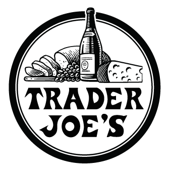

Before you start cooking, you will need to know the basics.
When you are a student, it's important to read the dorm rules and become familiar with the stores around you. If you don't know the rules, check the university's website.
Here are some appliances and stores that will be a big help for your cooking
Appliances
Microwaves
The most iconic and easy to use appliance. Most students keep one in their room. You can use it to reheat leftovers or make something new!
Click here to shop for Microwaves
Instant pots
This one of a kind brand is built to be six appliances in one. You can use it to make almost anything, so it is highly reccomended. A lot of the recipes here use it!
Click here to shop for instant pots
Stores

Target
If you live on campus, you will definetly have a target store nearby. This place is best for getting your cooking supplies, but they have great food too!
Click here to shop from Target

Trader Joe's
If you have allergies or eat a certain diet, Trader Joe's is great for finding many alternatives to foods you can't eat at a reasonable price! They are also very vegan friendly! You will most likely have the easiest time finding ingredients here out of any of the stores on this list. They also have recipes on their website!
Click here to shop from Trader Joe's
Dollar tree
The cheapest of all the stores on this list! The dollar tree is great for finding basic ingredients such as oils, broths, and plenty more! Like target, this place is also good for finding kitchen tools, but be sure to check their quality first.
Click here to shop from Dollar tree
99 cent store
The 99 cent store is similar to Dollar tree, but it offers more items with better quality. Their prices vary, but it is worth it! This store features plenty of tools and ingredients that would cost more anywhere else. The only problem with this store is it does not offer many meat options